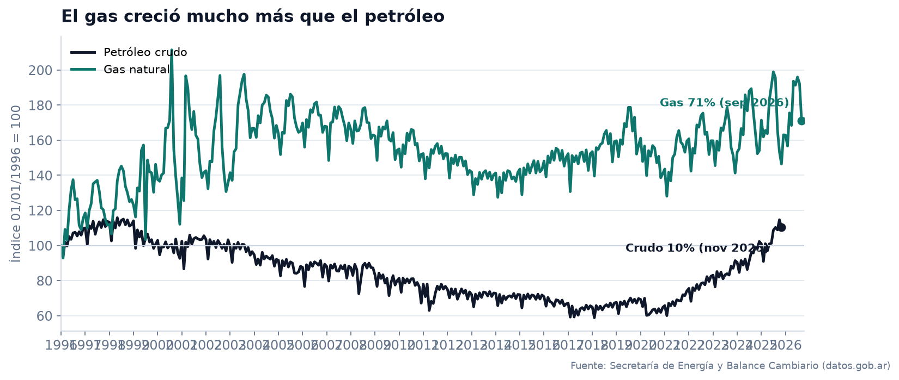
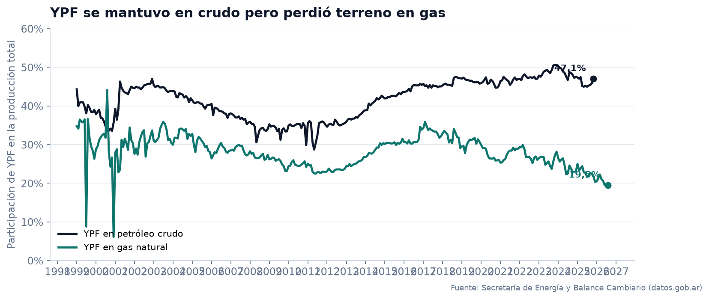
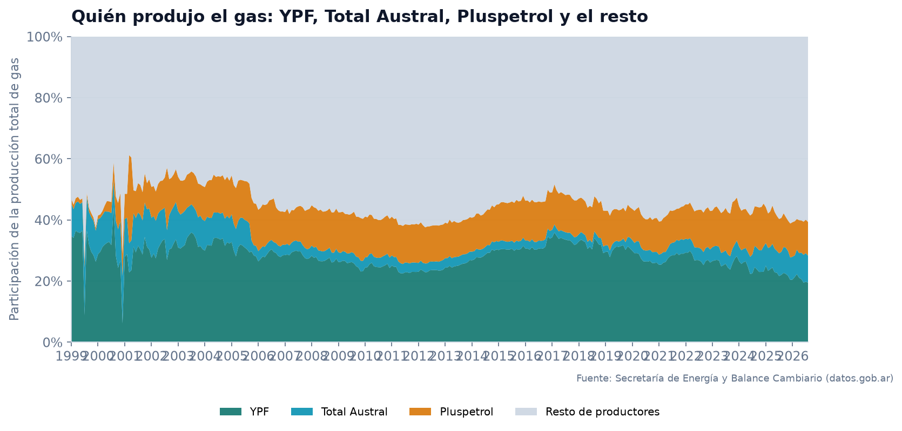
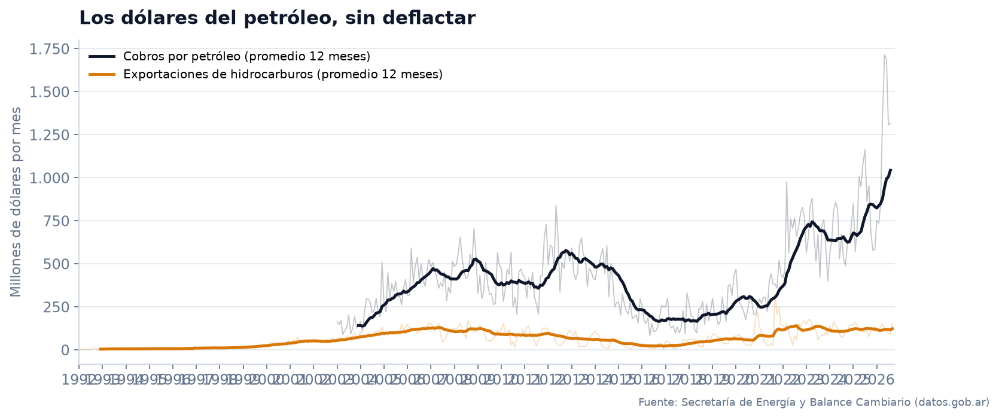
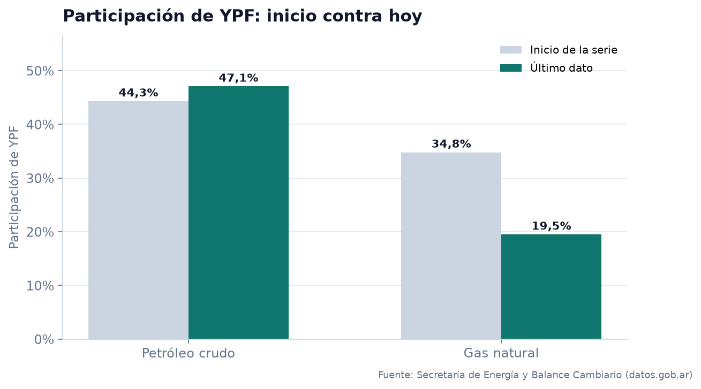

Crecimiento del gas
71%
Desde 01/01/1996, en volumen físico
Crecimiento del crudo
10%
Mismo período y misma base
YPF en petróleo
47,1%
Participación al 01/11/2025
YPF en gas
19,5%
Era 34,8% en 1999
La matriz se volcó al gas
Desde 01/01/1996, la producción de gas natural subió 71,0% (hasta 01/09/2026), mientras que la del petróleo crudo apenas cambió 10,3% (hasta 01/11/2025). Cada serie se mide hasta su último mes disponible: los meses que se comparan son 369 en total, de series oficiales de la Secretaría de Energía.
Ambas líneas empiezan en 100 para poder compararlas aunque sus unidades sean distintas: el crudo se mide en miles de metros cúbicos y el gas en millones.

YPF: estable en crudo, en retroceso en gas
En petróleo, YPF pasó de 44,3% a 47,1% de la producción nacional: se mantuvo e incluso ganó un poco. En gas, en cambio, cayó de 34,8% a 19,5%, una pérdida de 15,3% de participación.
Es la misma empresa con dos comportamientos distintos según el hidrocarburo. Por eso un promedio de "producción total de YPF" escondería la historia.

Quién ocupó ese lugar
El gas que dejó YPF no desapareció: lo produjeron otros. Estas son las participaciones de las empresas con serie mensual pública (en millones de m³ convertidos desde miles de m³):
| Productor | Inicio | Último dato | Cambio (puntos) |
|---|---|---|---|
| YPF | 34,8% | 19,5% | -15,3% |
| Total Austral | 10,6% | 8,8% | -1,8% |
| Pluspetrol | 1,6% | 11,0% | 9,4% |
| Resto de productores | 53,0% | 60,7% | 7,7% |
El "resto" se calcula por diferencia entre el total nacional y las tres empresas informadas, así que incluye a todos los demás productores.

Los dólares, en dólares
Los cobros por petróleo del balance cambiario pasaron de US$ 164 millones a US$ 1.318 millones por mes: 705%. Las exportaciones de gas de petróleo y otros hidrocarburos pasaron de US$ 4,1 a US$ 154,5 millones.
La línea fina es el dato mensual y la gruesa, el promedio móvil de 12 meses: el sector es muy volátil y el promedio ayuda a ver la tendencia.

En una mirada
La participación de YPF en crudo se movió de 44,3% a 47,1%, mientras que en gas cayó de 34,8% a 19,5%. El gráfico resume las dos caras de la misma empresa.

Cómo se hizo (y dónde está la trampa)
Todo el proceso es reproducible: los datos se descargan de la API oficial y el informe se genera con un script de Python.
- Fuentes: Secretaría de Energía (producción por empresa y
total) y Balance Cambiario del BCRA (cobros por petróleo), vía
datos.gob.ar. - Series: 8 series oficiales en 4 grupos, guardadas como CSV
junto con sus metadatos en
datos/fuente.json. - Conversiones: la producción de YPF en crudo viene en m³ y el total en miles de m³ (dividir por 1.000). El gas de YPF y de las otras empresas viene en miles de m³ y el total en millones (dividir por 1.000 otra vez).
- Período: matriz 01/01/1996 a 01/09/2026 (369 meses); participaciones 01/01/1999 a 01/08/2026.
- Participación: producción de la empresa ÷ producción total nacional × 100. Se asume que la serie total incluye a todas las empresas.
- Actualizar:
python descargar_datos.pyy despuéspython analisis.py. En Windows también podés hacer doble clic enactualizar.bat.
Limitaciones: las series no terminan en el mismo mes (el crudo total llega hasta 01/11/2025 y el gas hasta 01/09/2026); por eso cada indicador informa su propia fecha y las participaciones usan solo los meses en común. "Cobros por petróleo" y "exportaciones" no son exactamente lo mismo: el primero registra entradas de divisas por el rubro petrolero y el segundo, ventas externas declaradas. El trabajo es descriptivo: no es un pronóstico ni una recomendación de inversión.